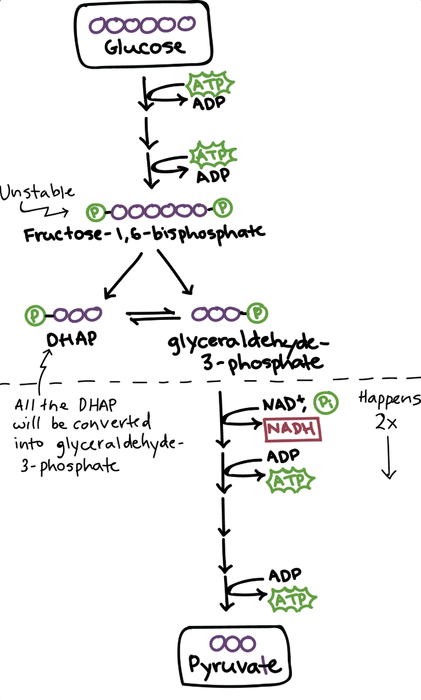
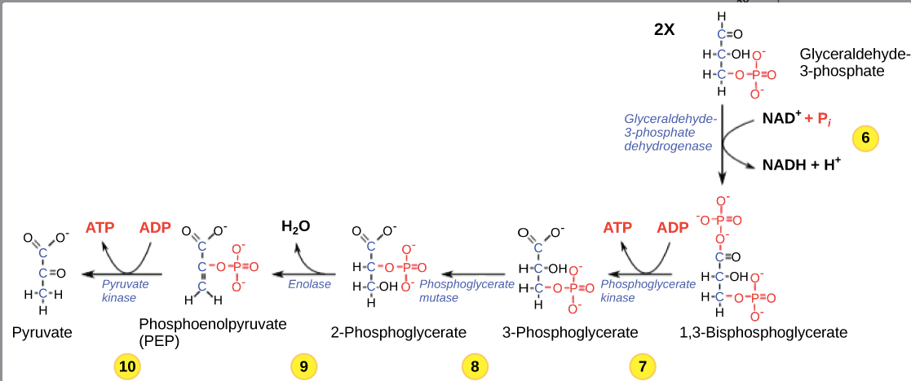
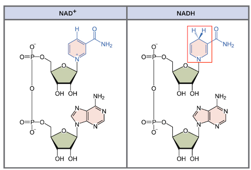

A glicólise ocorre no citosol (parte líquida do citoplasma), fora da mitocôndria.
Não usa oxigênio — é a única etapa anaeróbica da respiração celular.
Presente em quase todos os organismos vivos.
Gasta 2 ATP para ativar e quebrar a glicose em 2 trioses de 3 carbonos.
Fase de Rendimento (etapas 6–10)
Produz 4 ATP + 2 NADH convertendo as trioses em piruvatos.
Saldo Real — Nunca Confundir!
4 ATP produzidos − 2 ATP gastos = 2 ATP líquidos por glicose.
A prova cobra o saldo líquido, não o bruto.

Visão geral da glicólise — glicose → frutose-1,6-bisfosfato → DHAP + GAP → piruvato (Khan Academy)
2. Citosol, GLUT e Insulina
Citoplasma
Tudo dentro da célula exceto o núcleo: citosol + organelas + citoesqueleto.
Citosol
Parte líquida onde as enzimas da glicólise ficam dissolvidas. A glicólise ocorre aqui.
Transportador
Localização
Função
GLUT1
Hemácias, barreiras
Entrada basal constante
GLUT2
Fígado, pâncreas
Sensor de glicemia
GLUT3
Neurônios
Alta afinidade por glicose
GLUT4
Músculo, adipócito
Responde à insulina ⭐
Como a Insulina Ativa o GLUT4
1. Glicemia sobe → pâncreas libera insulina
2. Insulina se liga ao receptor na membrana
3. Ativa cascata IRS → PI3K → Akt
4. Vesículas com GLUT4 migram para a membrana da célula
5. Mais GLUT4 na superfície → mais glicose entra por difusão facilitada
3. Fase de Investimento (Etapas 1–5)
1
Hexoquinase / Glicoquinase
Glicose + ATP → Glicose-6-fosfato + ADP
Prende a glicose dentro da célula (fosforilada não passa pelo GLUT). Gasta o 1º ATP.
2
Fosfoglicose isomerase
Glicose-6-fosfato → Frutose-6-fosfato
Aldose → cetose. Prepara para quebra simétrica em duas metades de 3C.
3
PFK-1 · Fosfofrutoquinase-1 ⭐ Regulatória
Frutose-6-fosfato + ATP → Frutose-1,6-bisfosfato + ADP
Gasta o 2º ATP. Após este ponto a molécula está comprometida com a glicólise. Ativada por: AMP, ADP | Inibida por: ATP, citrato.
Quebra retro-aldol: produz dois açúcares de 3 carbonos (isômeros entre si).
5
Triose-fosfato isomerase
DHAP ⇌ GAP
Apenas o GAP continua na via. O DHAP é rapidamente convertido conforme o GAP é consumido. Resultado: 2 moléculas de GAP por glicose. Tudo abaixo ocorre 2×.
4. Fase de Rendimento (Etapas 6–10) · Ocorre 2× por glicose

Etapas 6–10 — do GAP ao piruvato, com formação de NADH e ATP (Khan Academy)
GAP + Pi + NAD⁺ → 1,3-bisfosfoglicerato + NADH + H⁺
O aldeído do GAP é oxidado. NAD⁺ aceita um hidreto (H⁻) = 1 próton + 2 elétrons → vira NADH.
Fosfato inorgânico (Pi) entra na molécula. Rende 2 NADH por glicose.
7
Fosfoglicerato quinase
1,3-bisfosfoglicerato + ADP → 3-fosfoglicerato + ATP
Fosforilação em nível de substrato (sem cadeia respiratória). Rende 2 ATP por glicose.
8
Fosfoglicerato mutase
3-fosfoglicerato → 2-fosfoglicerato
Fosfato muda do carbono 3 para o carbono 2. Prepara para desidratação.
9
Enolase
2-fosfoglicerato → Fosfoenolpiruvato (PEP) + H₂O
Perde água. PEP é extremamente instável e energético — ligação fosfato enólica.
10
Piruvato quinase
PEP + ADP → Piruvato + ATP
PEP transfere fosfato para ADP. Rende 2 ATP por glicose.
PEP → enolpiruvato → piruvato (tautomerização espontânea para forma estável).
5. Tabela das 10 Etapas — Resumo
Etapa
Reação
Enzima
Saldo
1
Glicose → G-6-P
Hexoquinase
−1 ATP
2
G-6-P → F-6-P
Fosfoglicose isomerase
—
3
F-6-P → F-1,6-BP
PFK-1 ⭐
−1 ATP
4
F-1,6-BP → DHAP + GAP
Aldolase
—
5
DHAP → GAP
Triose-P isomerase
—
6
GAP → 1,3-BPG
GAPDH ⭐
+2 NADH
7
1,3-BPG → 3-PG
Fosfoglicerato quinase
+2 ATP
8
3-PG → 2-PG
Fosfoglicerato mutase
—
9
2-PG → PEP
Enolase
—
10
PEP → Piruvato
Piruvato quinase
+2 ATP
SALDO FINAL
+2 ATP+2 NADH
6. O que é NADH — Estrutura e Formação

NAD⁺ vs NADH — note o hidreto (H⁻) adicionado ao anel nicotinamida em NADH
Ele não é ATP. Mas carrega elétrons de alta energia que renderão muito ATP depois,
na cadeia transportadora de elétrons (Parte 3).
Cada NADH rende aproximadamente 2,5 ATP na fosforilação oxidativa.
CH₃ – C(=O) – COO⁻
cetona carboxilato
→ 3 oxigênios por piruvato:
1 na cetona (C=O) + 2 no carboxilato (COO⁻)
Como cada glicose gera 2 piruvatos: 2 × 3O = 6O — correspondendo aos 6 oxigênios da glicose original (C₆H₁₂O₆).
8. Destino do Piruvato e do NADH
Com O₂ (aeróbico)
Piruvato → entra na mitocôndria → oxidação do piruvato → ciclo de Krebs
NADH → entrega elétrons à cadeia transportadora → regenera NAD⁺ + ~2,5 ATP
Sem O₂ (anaeróbico)
Piruvato → fermentação (álcool em leveduras / lactato em hemácias e músculo)
NADH → doa elétrons ao piruvato → regenera NAD⁺ sem gerar ATP
Por que fermentar?
Para regenerar NAD⁺. Sem NAD⁺ livre, a etapa 6 (GAPDH) trava e toda a glicólise para.
Hemácias não têm mitocôndria — dependem exclusivamente da fermentação lática para produzir ATP.
9. Erros Clássicos
Erro 1 — Glicólise dentro da mitocôndria
A glicólise ocorre no citosol, fora da mitocôndria. A mitocôndria só entra a partir do piruvato.
Erro 2 — Saldo de 4 ATP
4 ATP são produzidos, mas 2 foram gastos. Saldo real = 2 ATP líquidos.
Erro 3 — NADH já é ATP
NADH é carreador de elétrons. Ele vai gerar ATP depois, na fosforilação oxidativa, mas não é ATP diretamente.
Erro 4 — O₂ é necessário na glicólise
A glicólise é anaeróbica. O O₂ só é necessário no final da cadeia transportadora de elétrons (Parte 3).